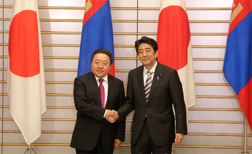
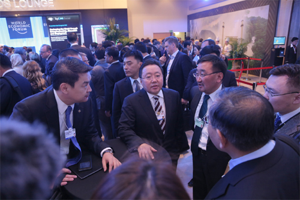

Inauguration of the fourth President of Mongolia Elbegdorj Tsakhia - Jun. 18, 2009
Second inauguration of the fourth President of Mongolia Elbegdorj Tsakhia - Jul. 10, 2013
Second inauguration of the fourth President of Mongolia Elbegdorj Tsakhia - Jul. 10, 2013
President Elbegdorj Received Minister of Foreign Affairs of Canada.
 President Elbegdorj Giving Opening Speech of the National Festivity Naadam.
President Elbegdorj Giving Opening Speech of the National Festivity Naadam.
President Elbegdorj Opening the Mongolian Business Summit 2014.

President Elbegdorj meeting with Prime Minister Abe.
President Elbegdorj Received Prime Minister of Kyrgyzstan Djoomart Otorbaev.
President Received Minister for Defense Affairs of the State of Qatar.
President of Mongolia Tsakhiagiin Elbegdorj handed over the certificates of judge to the newly appointed judges at the Citizens’ Chamber.
President of Mongolia Tsakhiagiin Elbegdorj received the Federal Minister for Foreign Affairs of the Federal Republic of Germany Frank-Walter Steinmeier.
President of Mongolia Tsakhiagiin Elbegdorj received Speaker of the Grand National Assembly of the Republic of Turkey Cemil Cicek.
President of Mongolia Tsakhiagiin Elbegdorj received Chairperson of the Federation Council of the Russian Federation Valentina Ivanovna Matviyenko
President of Mongolia Ts.Elbegdorj met with President of Russia Vladimir Putin in Shanghai. President Elbegdorj was here to attend the Fourth Summit of the Conference on Interaction and Confidence Building Measures in Asia /CICA/.
President of Mongolia Tsakhiagiin Elbegdorj met with President of the People’s Republic of China Xi Jinping in Shanghai.

President of Mongolia Tsakhiagiin Elbegdorj attended to The 44th Annual Meeting of the World Economic Forum 2014 in Davos, Switzerland